AWS Austin Agentic AI Hackathon · Posit
It all starts with data.
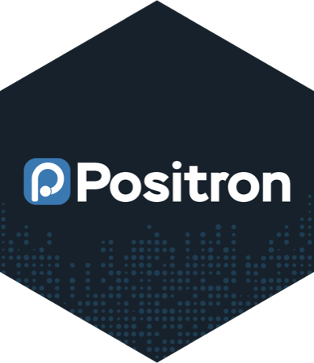
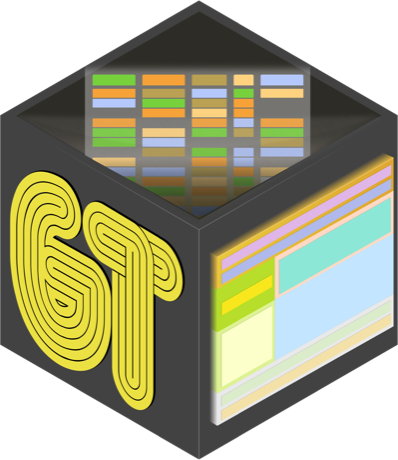
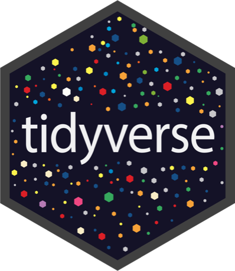
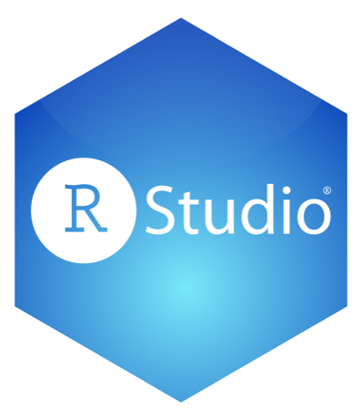
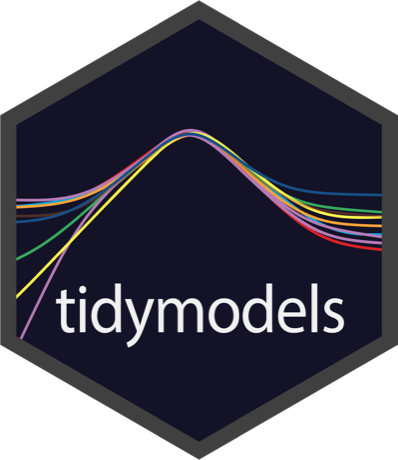
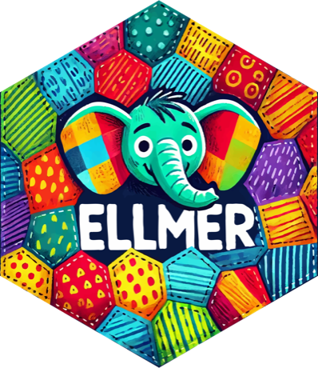
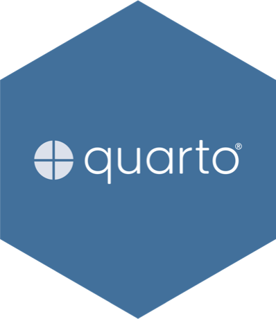
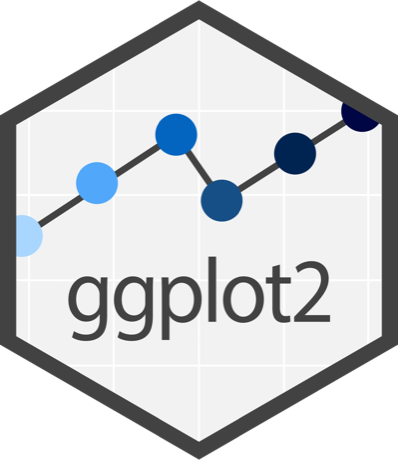
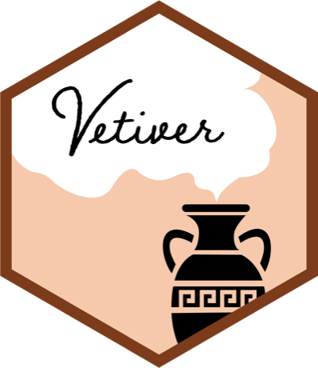
Meet Positron
A data science IDE for Python and R
Consoles, variables, a Data Explorer, plots, and an AI assistant that understands your data.
Today In your SageMaker Space, set up for this event
After today On your laptop, free to download
Positron
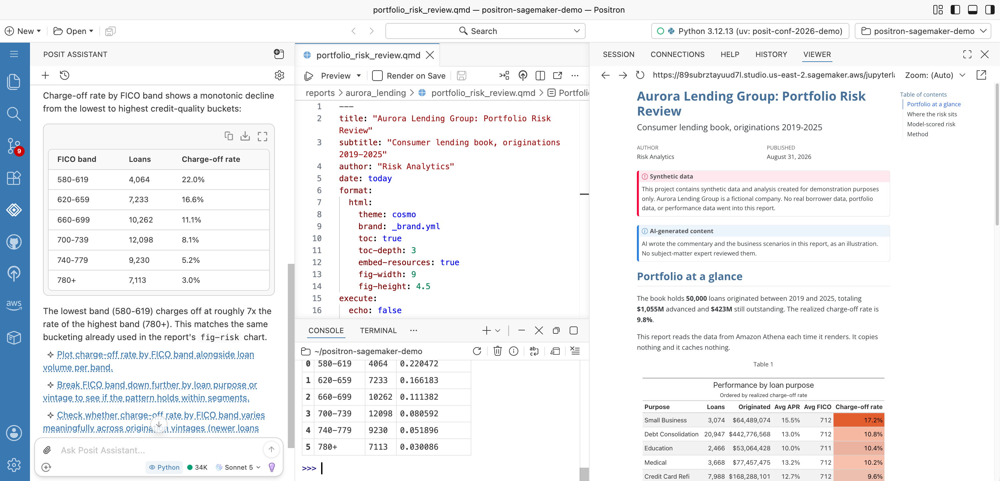
studio.sagemaker.aws · Positron
Setting up the project · shortened Click or press R to replay
.venv inside the projectSet up once: uv run setup_positron_sagemaker_from_private_ecr.py in your workshop terminal. It takes 20 to 30 minutes, so start it now. Waits are cut from this recording.
studio.sagemaker.aws · Positron
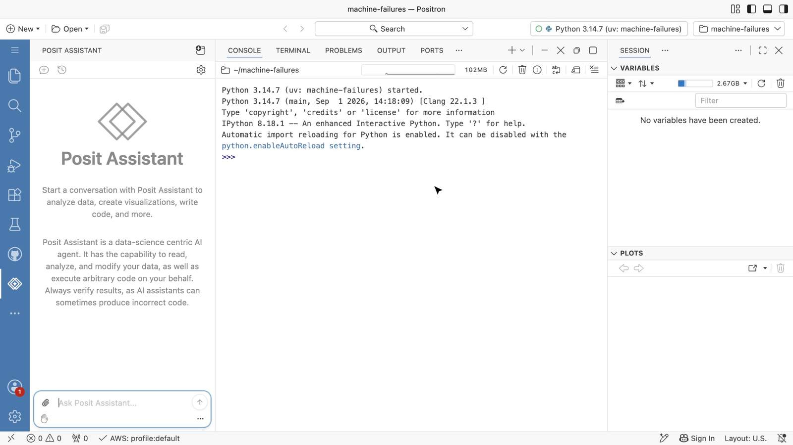
Model working · 3× speed Click or press R to replay
.venv with uvRecorded in Positron on SageMaker with Claude Sonnet 5.5 on Amazon Bedrock. Model time shown at 3×. It can also generate synthetic data when you can’t use the real thing.
studio.sagemaker.aws · Positron
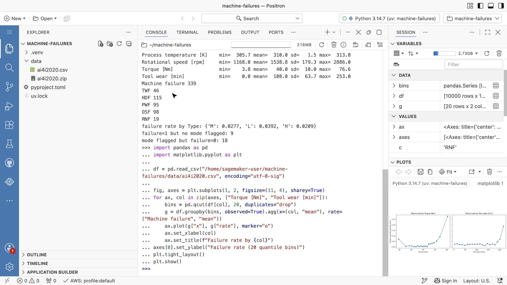
Click or press R to replay
AI4I 2020 predictive maintenance data, suggested for Track 2, from the UCI Machine Learning Repository.
Prompts for Posit Assistant
Track 1 · Caregivers
“Load these lab results, flag values outside reference ranges, and plot them by panel.”
Then: “Estimate heart rate from this EKG series and plot the R peaks.”
Track 2 · Shop floor
“Summarize failure types in the AI4I data and show which sensors separate them.”
Then: “Fit a quick classifier and show me the confusion matrix.”
Track 3 · Portfolio
“Compare five years of returns and volatility for these tickers.”
Then: “Build a minimum-variance portfolio and backtest it.”
Posit Assistant writes and runs code in your session, so check its work like you’d check a teammate’s.
chatlas for Python · ellmer and commons for R · on Amazon Bedrock
Python · chatlas + Shiny R · ellmer + commons
localhost · Shiny for Python
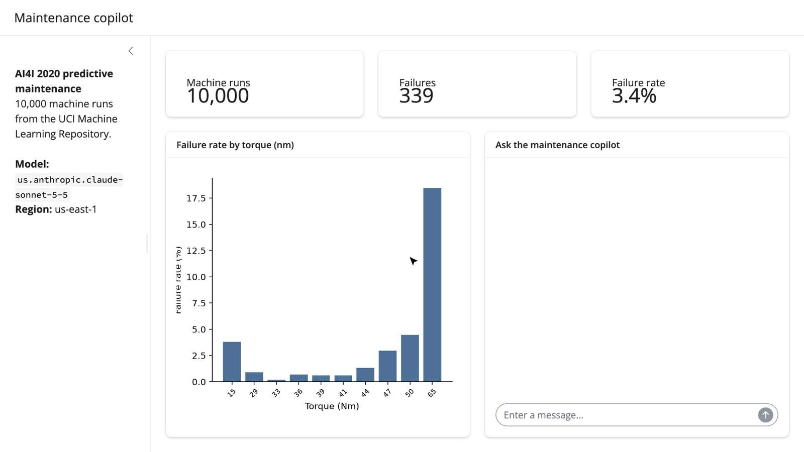
Agents working · 2.5× speed Click or press R to replay
localhost · Shiny for R
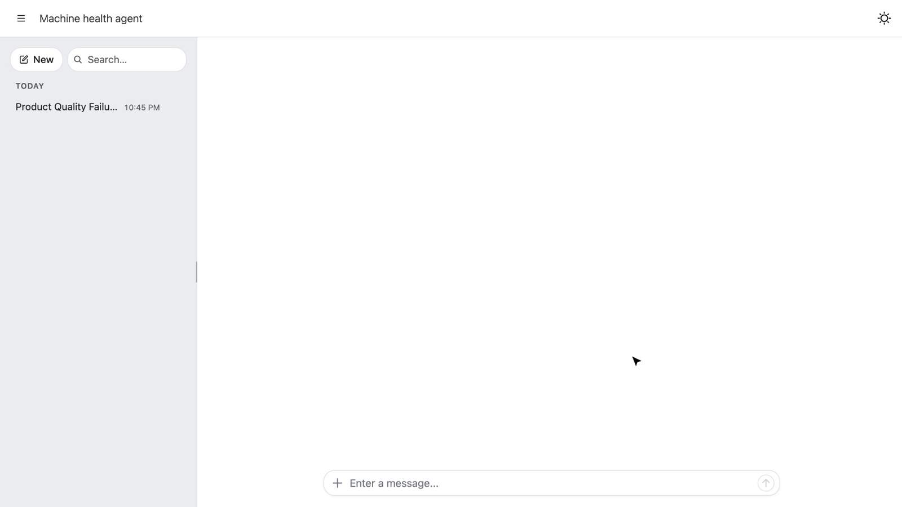
Agent working · 2× speed Click or press R to replay
from chatlas import ChatBedrock
analyst = ChatBedrock(
model="us.anthropic.claude-sonnet-5-5",
api="converse", system_prompt=ANALYST,
)
analyst.register_tool(failure_rate_by)
analyst.register_tool(show_signal) # drives the chart
# another agent, exposed as a tool
analyst.register_tool(consult_planner)Maintenance copilot. An analyst agent answers with your Python functions, updates the dashboard, and hands off to a planner agent for next steps.
Track 2 machine health. The agent runs your trusted R code first, then marks every answer with where it came from: trusted code, cited sources, or new SQL. commons is experimental.
Both apps recorded running locally against Amazon Bedrock, with agent time sped up 2 to 2.5×. Click a tab to switch.
From data to demo in one day
01 · Explore
Positron
Profile the data. Ask Posit Assistant for a first look.
02 · Trust
Your own functions
Reference ranges, failure scores, risk metrics. Test them in the console.
03 · Agents
chatlas or ellmer
One chat per persona, each with its tools. Log every handoff.
04 · Demo
Shiny, or commons
A chat app judges can click through. commons adds provenance markers.
05 · Ship (optional)
AgentCore
Run the Python agent as a managed endpoint with the starter kit’s handler.
Track 1 Lab Analyst · Radiologist · Doctor · Nutritionist · Physio
Track 2 Sensor monitor · Failure predictor · Parts buyer · Scheduler
Track 3 Price analyst · Fundamentals · Macro · Sentiment · Portfolio
Have fun building. Come find us with questions.
Starter code · ideas github.com/blairj09/aws-austin-hackathon
Positron Desktop positron.posit.co/download
chatlas · Python posit-dev.github.io/chatlas
ellmer · R ellmer.tidyverse.org